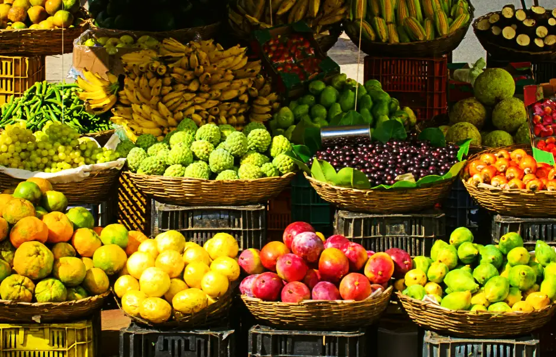

About Us
As a young boy growing up near Scranton, Pennsylvania, Dwight Schrute learned learned the importance of hard work. His childhood and teen years were spent working on his family's organic beet farm with his cousin Mose. He took over the family farm in the early 1990s and worked diligently to grow it into the best organic beet farm in the state. While working as assistant to the regional manager at a mid level paper company, he also managed a bed and breakfast and continued to innovate in his organic farming practices, winning many awards at the Pennsylvania state fair for his delicous beets. In 2014, Dwight and his wife Angela sold the family farm to cousin Mose and made the trek to southern California, in search of warmer weather and more challenging produce to farm.
Dwight and Angela settled their family on a large plot of farmland near Carlsbad, California and were soon growing a variety of delicious, quality organic fruits and vegetables using some of the same organic farming practices he perfected over his years in Pennsylvania. As word of their delicious, superior produce began to spread, their family produce stand couldn't keep up with demand. In 2015, the Shrutes formed an alliance with several nearby farms who share their passion for organic farming and dedication to growing the finest fruits and vegetables possible. Together, they opened the storefront location of "Bountiful Foods" in Carlsbad to supply quality produce bags and drink mixes to their devoted customers. The storefront is managed by Angela, who is an accomplished accountant. She not only keeps the books, but also oversees the company's quality control team that periodically audits all of the suppliers to ensure proper procedures and protocols are being followed to uphold the company's high standards. In order to keep up with demand and and provide the variety their customers have come to expect, Bountiful Foods now sources first-rate produce from many local farms as well as a few carefully chosen national and international suppliers.
Today, in addition to the storefront location, Bountiful Foods owns and operates 5 food trucks. The food trucks can be found at located farmers markets, festivals, and other locations in the cities of Oceanside, Encinitas, De Mar, La Jolla, and Imperial Beach.